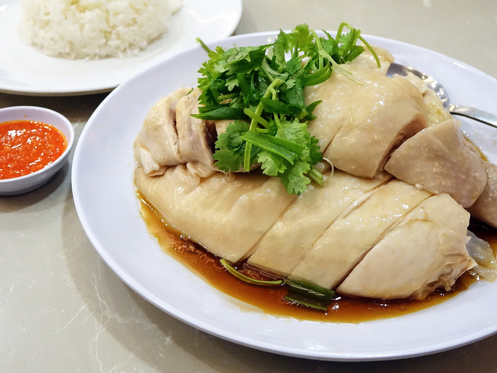

<ons-page id="menurest">
    <style>
        .head {
         font-size: 30px;
            margin-top: 10px;
        }
        .cc{

            text-align: right 
        }
        .fas{
font-size: 30px;
margin-top: 10px
        }
        .center{
            font-size: 25px;


        }
        .dd{

            text-align: center;
        }
    </style>
    
    <ons-toolbar class="ons-toolba">
            <div class="left">
        
              <ons-toolbar-button  id="back2">
                <i class="fas fa-angle-left"></i>
              </ons-toolbar-button>
        
            </div>
            <div class="center">ป้าไก่</div>
            
          </ons-toolbar>

        <v-ons-card>
            

   
    
    <ons-list modifier="inset">
        <ons-list-header>Menu</ons-list-header>

        <ons-list-item modifier="longdivider">   
                <label class="checkbox checkbox--material">
                        <input type="checkbox" class="checkbox__input checkbox--material__input" checked="checked">
                        <div class="checkbox__checkmark checkbox--material__checkmark"></div>
                      
                      </label>  &nbsp; &nbsp; 
            
            ข้าวมันไก่ต้ม   50 บ.</ons-list-item>
            <ons-list-item modifier="longdivider">   
                    <label class="checkbox checkbox--material">
                            <input type="checkbox" class="checkbox__input checkbox--material__input" checked="checked">
                            <div class="checkbox__checkmark checkbox--material__checkmark"></div>
                          
                          </label>  &nbsp; &nbsp; 
                
                ข้าวมันไก่ย่าง  50 บ. </ons-list-item>
                <ons-list-item modifier="longdivider">   
                        <label class="checkbox checkbox--material">
                                <input type="checkbox" class="checkbox__input checkbox--material__input" checked="checked">
                                <div class="checkbox__checkmark checkbox--material__checkmark"></div>
                              
                              </label>  &nbsp; &nbsp; 
                    
                    ข้าวมันไก่อบ 50 บ.</ons-list-item>
                    <ons-list-item modifier="longdivider">   
                            <label class="checkbox checkbox--material">
                                    <input type="checkbox" class="checkbox__input checkbox--material__input" checked="checked">
                                    <div class="checkbox__checkmark checkbox--material__checkmark"></div>
                                  
                                  </label>  &nbsp; &nbsp; 
                        
                        ข้าวมันหมกไก่  50 บ.</ons-list-item>
                        <ons-list-item modifier="longdivider">   
                                <label class="checkbox checkbox--material">
                                        <input type="checkbox" class="checkbox__input checkbox--material__input" checked="checked">
                                        <div class="checkbox__checkmark checkbox--material__checkmark"></div>
                                      
                                      </label>  &nbsp; &nbsp; 
                            
                            ข้าวมันไก่ทอด 50 บ. </ons-list-item>
       

    </ons-list>
    

<div class="dd">
    <p style="margin-top: 30px;">
            <ons-button id="confirm">confirm</ons-button>
          </p>
        </div>


</ons-page>